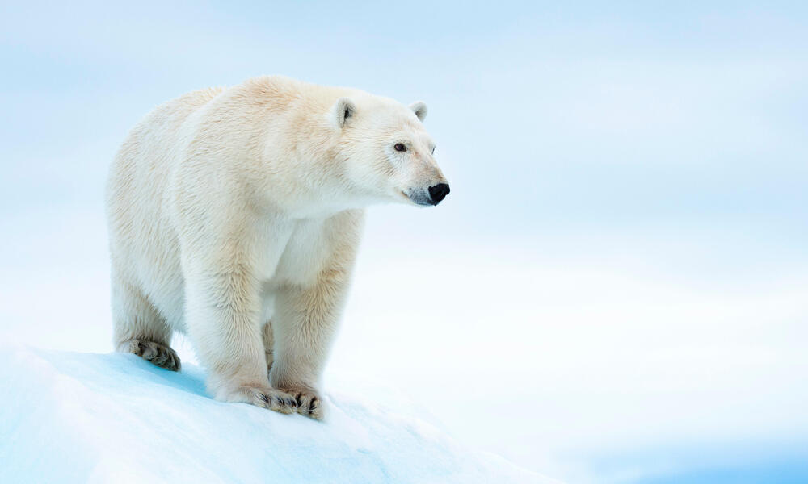

Engineering Notebook
This my favorite food reciepe.

8/19/22:
I learned the basics for creating a website using html.
Week of 8/26/22:
I have learned how to apply color, add pictures and make this site available online using github.
Week of 9/2/22:
I learned about the basics for mechanical engineering and safety for the engineering lab. I started the Tinkercad, a 3D modeling website, and experimented with it as well as starting the Rube Goldberg project. Some issues initail were controlling Tinkercad with a trackpad as it was really difficult to be reliable. For Thursday's challenge day, I was given the task to replicaate a home appliance in Tinkercad. My choice to replicate was a Fridge as I believed it was easier. An issue that occured was not being used to how to control Tinkercad. Even with a mouse, it was often hard to control it.
Week of 9/5/22:
This week, my Rube Goldberg contraption was finished. I was put on a team with Druv, Daniel and Ani to build a master Rube Goldberg contraption. We agreed upon one design that utilizes concepts from each of our own designs. A leading ramp, with a lever that hits a tower that pops the balloon.

Week of 9/5/22:
This week, we measured, cutted and started to put together our finalized Rube Goldberg design. Our group was mostly efficient. We had equal opportunities putting things together. Next week, we should be able to finish the Rube Goldberg contraption. During Challenge Day, the goal was to make a paper boat that can hold the highest possible weight without sinking for 5 minutes. Our group succeded with a boat with 15.1 lbs.
Challenge Day: Paper Boat
Week of 9/12/22:
This week, we put together all the pieces for the contraption. We agreed upon a counterweight, a battery. Unfortunately, we had to make changes to the original CAD model. Firstly, we had to add railings to the ramp in order to keep the baseball stable enough. Secondly, we had to add arms to the ramp itself to prevent the lever from moving all too much. Another issue was the original tater as we had difficulties with the smaller design. Eventually through vigourus testing, we made the tater out of 2 long wood beams taped together. An additional issue was the weight towards the final componet as it often fell forward or never fell. Our solution was to add a wood beam which was enough weight to allow the piece to reliable fall onto the balloon. Thursday's challenge day involved estimating the total number of bathroom stalls in the school. We asked around and got an estimated 40 stalls in total. For the Rube Goldberg competition, it took two attempts to pop the balloon. The primary issue was that the balloon was too large preventing the contraption from functioning properly.


Week of 9/26/22:
This week, I started to learn Bioengineering. The goal this week is to model a prosthetic for an animal. Restricted animals include Dog, Cat, Turtle, and Human prosthetics. I used a Polar Bear with the hind leg as the prosthetic. The main materials used are wood and string for the snow shoe, Titanium alloys for the main cylinders and ball joints,industrial lubricant for the ball joints, Polyurethane Laminate connecting the cylnders and covering any exposed parts including the snow shoes. Three ball joints are required. I would give the prosthetic at $5,372.
Week of 10/3/22:
This week, we learned about computer engineering and how computer science as well as electrical engineering function in computer engineering. We learned the parts of a computer, the problems of the current computer system, the salaries of computer engineers and the bare basics of a comuter. The main focus is disseccting a laptop and identifying each part on a worksheet. The dissection was went fairly smooth and was accomplished on Wedsnday. However, the internet was down on Thursday and we could not resemble the laptop. Instead on Thursday, there was a challenge in estimating the total number of doors/wheels in CV. I was on team doors and estimated 6,000 doors with our team of 3. Next week, I hope to at least reasemble the laptop to its original state.
Parts of the Laptop:

- 500 GB WD Blue Harddrive
- 6 GB DDR3 RAM (Samsung and Crucial)
- Battery
- Disk Drive
- WiFi Card
- Audio Card
- Motherboard with CPU and GPU
- Heat sink
- Fan
Keyboard and shell:

Week of 10/10/22:
This week, I learned about areospace engineering and the application in the world. From missiles to hand gliders, those will all constitute as aerospace engineering. Draft, lift, weight, and thrust are four fources primarly acting on an object that is actively in the air and moving. These forces must be understood in order to afffectively utilize airal objects. The primary challenge for aerospace engineering is to make a rocket fly as far as possible using a 2L bottle. Me and Augie designed a rocket that consists of the bottle with 4 fins at the bottom, 2 fixed wings at the side, a coned top, and 1L of water that is pressurized with an air pump to theortically launch the rocket. The paper draft and TinkerCad design went smooth without any problems. For challenge day, the goal was to make a paper airplane that could be the closet to the orange bucket out in the quad launched from the balcony of the stairs. Our airplane was 42ft away. What could have been done better, is narrowing the plane's profile so more space is utilized for lift as there was limited room for it. A BOM, Build of Materials, was created to list all the materials needed.
BOM for Rocket

Week of 10/17/22:
This week, the initial rocket design had to been modified to due a few factors: the wings were not stable enough had to be shorten and the fins were not accuratley shown with them moved up to address the problem. On Tuesday and Wednsday, we began creating the parts out of cardboard. Not a lot of progress could be made on Tuesday as we didn't have a box cutter for the majority of the period. By Wedsnday however, we got all the parts cut out including the cone which was cleavery made from cardboard that was folded and cut in particular ways to get the cone shape. On Thursday, the rocket was fully assembled using a variety of tape and hot glue. Putting on the parts was a challenge as the neither materials would help stick together both the cardboard and plastic bottle. The improvised solution to this was to long pieces of tape that forced the parts into position as direct connectons had poor results. On Friday, the rocet was launched and the results were not expected. I did not predict that the rocket would have a poor lift up and instead propeling itself forward.
Student Challenge Analysis for Bottle Rocket

Week of 10/24/22:
This week, I learned about environmental engineering. This field primarly composes on how to negate negative human impact on the environment. The roles of environmental engineering are more crucial this day in age as humanity's impacts are noticable piling up, like climate change. The primary lab for this unit would be a bottle filtration system. The goal is to filter out the black water, water that is not safe for consumption, to at least grey or white water, which is significantly safer than black water. The bottle would be composed of rocks, gravel and sand to filter out the black water. The bottle that my team made comprised of a higher sand composition, which most likely slowed down the filtration of the water. The water that could be collected was filtered into grey water and if given more time, could be filtered into white water. For challenge day, the goal was to calculate the number of candy corns that can fit on a single piece of paper. My group estimated 216 candy corns as 26 candy corns could fit height wise and 9 could be fit width wise. Multiply both to get 216 in total. The actual number of candy corns that could fit 222 candy corns